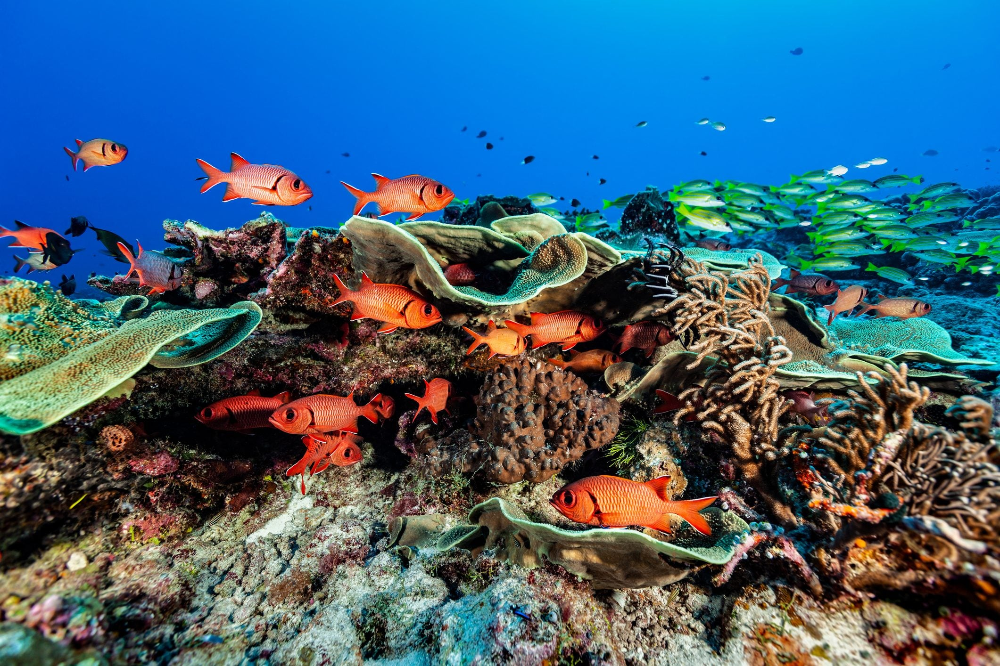

There’s something about the ocean that pulls at us—whether it’s the rhythmic crash of waves, the salty air, or the endless horizon that seems to blur the line between reality and possibility. Covering more than 70% of our planet, the ocean is not just a body of water; it’s a living, breathing system that shapes life on Earth in ways we often take for granted.

Beneath the shimmering surface lies a universe still largely unexplored. Scientists estimate that over 80% of the ocean remains unmapped and undiscovered. From vibrant coral reefs teeming with life to the mysterious depths of the abyss where sunlight never reaches, the ocean holds secrets that continue to challenge our understanding of biology and survival.
Creatures of the deep have evolved in extraordinary ways—glowing in the dark, withstanding crushing pressure, and thriving in extreme temperatures. Each discovery reminds us how adaptable life can be and how much we still have to learn.
The ocean does far more than provide scenic views and vacation destinations. It plays a critical role in regulating Earth’s climate by absorbing heat and carbon dioxide. In fact, it produces over half of the oxygen we breathe, thanks to microscopic organisms called phytoplankton.
It also supports millions of livelihoods worldwide through fishing, tourism, and transportation. Without the ocean, global ecosystems—and economies—would collapse.
The ocean’s beauty is not just a sight to behold—it’s a reminder of the delicate balance that sustains life on Earth. As we face the challenges of climate change and environmental degradation, it’s crucial that we recognize the ocean’s value and commit to its protection. By doing so, we ensure that future generations can experience the wonder and serenity that the ocean offers.